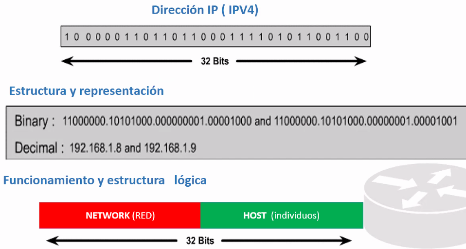

Se acabaron la difecciones y surgieron IPV5 e IPV6 (le gano a ipv5). Se esparaba que apra el año 2012 todo estubiera habando IpV6. Falta un 20%.


Clase A:

256 redes clase A y cada una con 2^24 direcciones.
Clase B: 16565 redes clase b con mas de 16000 host cada una.

Clase C:
Bits que identifican a la red:
Se le ponen unos a la parte de red.

Direccion de red: Una direccion que va a identificar a todo el grupo.

2^8-2 = direcciones usables